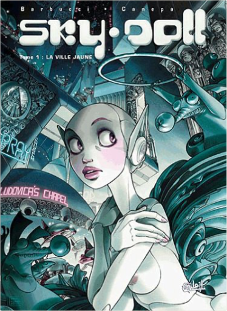
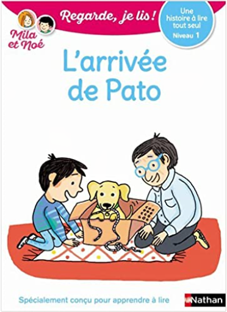
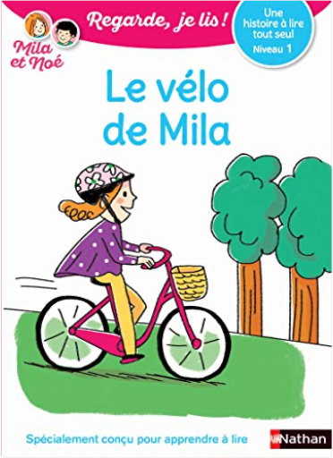
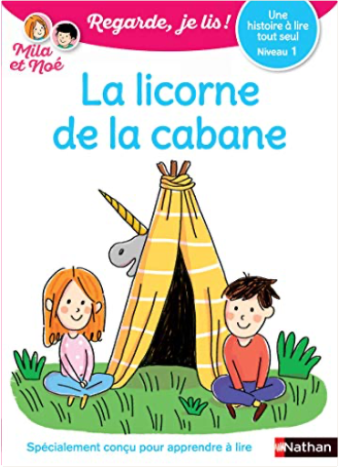

Julien
Collection Total:
2 100 Items
Last Updated:
Feb 15, 2025
Shelf:
Books
Movies
Albums
Videogames
Games
BD
BD Camille
Blu-ray
Business
Camille
Comics
Cooking
Lego
Manga
Pauline
Photography
Sport
Star Wars
T'choupi
Travel
TV Shows
Un livre dont vous êtes le héro
Vinyl
Walt Disney
4
5
6
7
8
sky doll : doll's factory
alessandro barbucci, barbara canepa
284565426X

sky doll, tome 1 : la ville jaune
alessandro barbucci, barbara canepa
2845652917
sky doll, tome 1: spaceship collection
alessandro barbucci, barbara canepa
2849466743
sky doll, tome 2 : aqua
alessandro barbucci, barbara canepa
2845652097
sky doll, tome 2 : lacrima christi collection
alessandro barbucci, barbara canepa
2302003608
sky doll, tome 3 : la ville blanche
alessandro barbucci, barbara canepa
2845656874
sky doll, tome 3 : la ville blanche (2b)
alessandro barbucci, barbara canepa
2845657757
sky doll, tome 4 : sudra
alessandro barbucci, barbara canepa
2302042751

Regarde, je lis ! tome 14 : L'arrivée de Pato
Eric Battut
2091933317
Regarde je lis ! 4 histoires de Mila et Noé : vive les vacances !
Éric Battut
2095000595
Regarde je lis ! BD, tome 3 : Mila et Noé et le parcours aventure
Éric Battut
2095015207

Regarde, je lis ! tome 1 : Le vélo de Mila
Éric Battut
2091932272

Regarde, je lis ! tome 5 : La licorne de la cabane
Éric Battut
2091932655
Regarde, je lis ! tome 7 : La dent perdue
Éric Battut
2091932671
4
5
6
7
8

 Made with Delicious Library
Made with Delicious Library